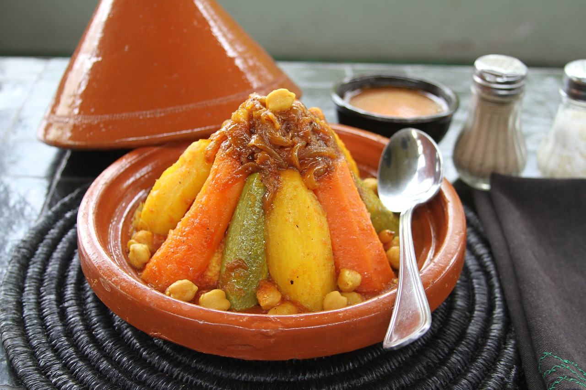
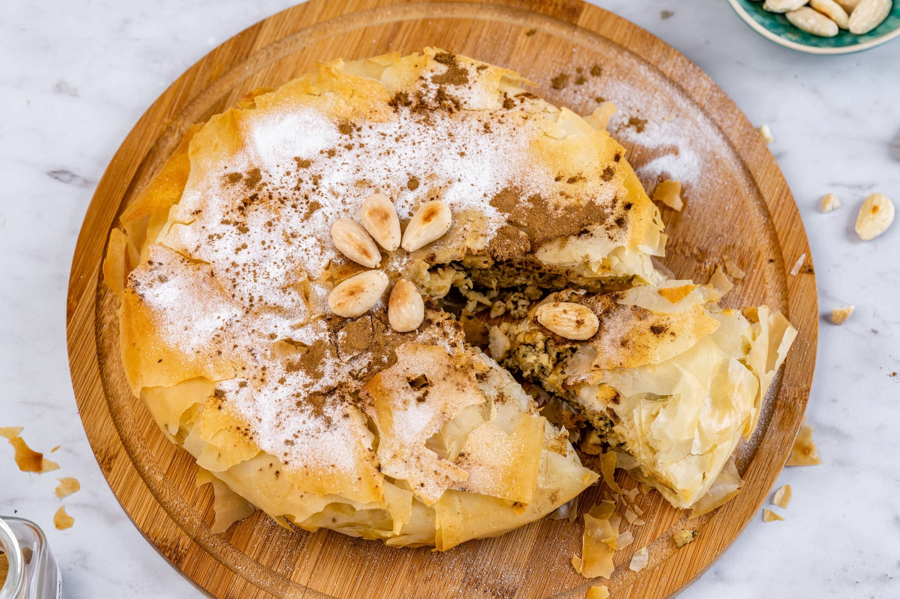
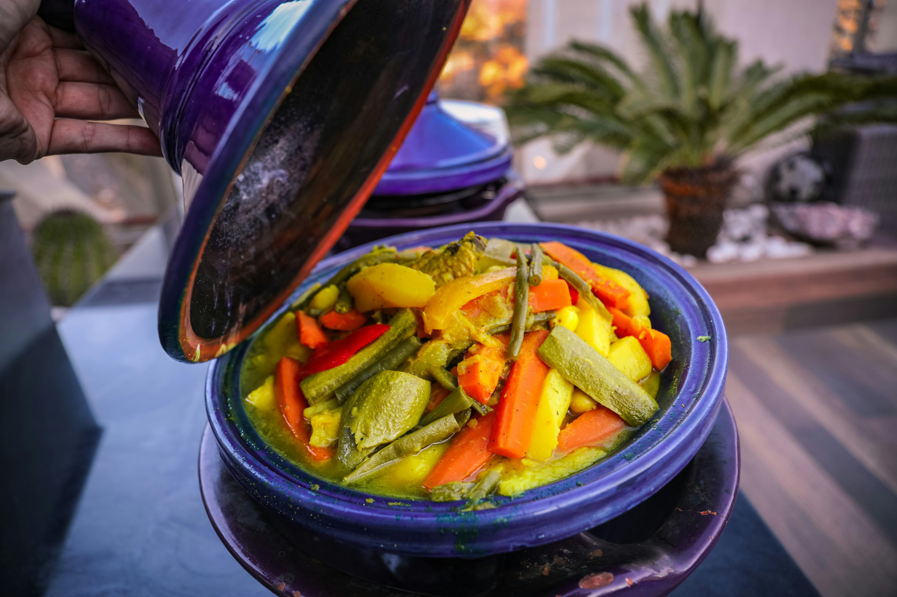
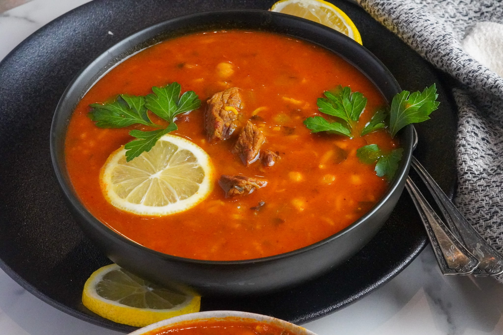

Couscous consists of tiny steamed semolina wheat granules, typically served with a medley of slow-cooked
vegetables, tender meat (most often lamb, chicken, or beef), and a fragrant broth. The dish is often enhanced
with spices like cumin, cinnamon, and saffron, along with raisins and chickpeas, offering a perfect balance of savory
, spicy, and subtly sweet flavors.
couscous

Moroccan pastilla is a savory-sweet pastry traditionally made with layers of thin,
crisp warqa dough, filled with spiced meat, most commonly pigeon or chicken. The filling is a rich mixture of tender,
slow-cooked meat, almonds, eggs, and a fragrant blend of spices like cinnamon, saffron, and ginger. The pastry is often dusted with powdered sugar
and cinnamon after baking, creating a delightful contrast between the sweet, crispy exterior and the savory, aromatic filling.
pastilla

Tajine is a traditional Moroccan dish named after the conical clay pot in which it is slow-cooked.
The dish typically consists of tender meat—such as lamb, chicken, or beef—combined with a variety of vegetables, dried fruits
(like apricots or prunes), and an aromatic blend of spices, including cumin, coriander, saffron, and cinnamon. The slow-cooking
method allows the ingredients to meld together, resulting in rich, deeply infused flavors.
tajine

Harira is a traditional Moroccan soup, often enjoyed during Ramadan to break the fast.
It features a rich, tomato-based broth, thickened with a combination of lentils, chickpeas, and broken vermicelli noodles.
The soup is flavored with a blend of aromatic spices like cumin, turmeric, ginger, and cinnamon, which gives it a warm and
slightly spicy profile. Harira typically includes tender chunks of lamb or beef, though it can also be made vegetarian.
Harira